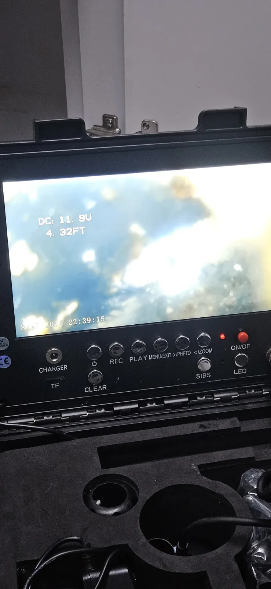
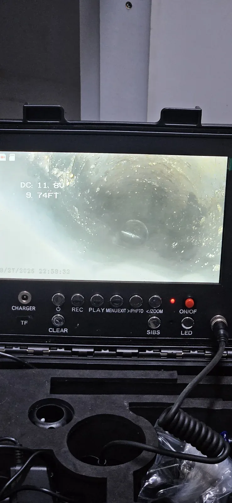

부천시 원미구 도당동, 증상과 점검 기준
싱크대뚫는업체를 알아볼 때는 장비 이름과 함께 작업 접근 방법과 완료 확인 과정을 살펴보세요. 도당동에서는 내시경으로 내부 상태를 확인하고 필요한 접근 공간을 확보한 뒤 막힌 구간을 작업했습니다.
부천시 원미구 도당동에서 싱크대 물 빠짐이 원활하지 않아 점검한 싱크대막힘 현장입니다. 이번 작업은 배관 안의 막힘을 처리하기에 앞서 장비가 들어갈 공간부터 확보해야 했습니다. 싱크대 아래에 배관이 있어도 하부장 판재와 주변 구조 때문에 작업 위치에 바로 접근하기 어려울 수 있습니다. 신라건축설비는 내시경으로 배관 내부를 살피고 작업할 위치를 확인했습니다.
뚫는 업체에 문의할 때는 장비 보유 여부만 묻기보다 이번 증상에서 무엇을 먼저 확인하는지 물어보세요. 확인한 위치와 작업 방법이 연결되고, 처리 후에는 어떤 기준으로 배수가 회복됐다고 판단하는지 설명받을 수 있어야 합니다. 현장 사진은 장비가 놓인 모습뿐 아니라 작업 대상과 결과를 함께 보는 자료입니다. 싱크대막힘 상담 시에는 물이 고이는 위치, 언제부터 불편했는지, 이미 시도한 방법을 알려주시면 좋습니다. 같은 지역에서도 배관 구조가 달라지므로 방문 가능 일정과 필요한 점검 범위를 개별적으로 확인해 주세요.
싱크대가 막혔을 때 겉으로 보이는 호스만 살펴서는 내부 상황을 알기 어려운 경우가 있습니다. 이번 도당동 싱크대막힘 역시 내시경 진단을 토대로 접근 위치와 작업 방법을 정했습니다. 모든 현장에서 타공을 하는 것은 아니며, 이번처럼 하부 구조상 작업 공간이 필요한 경우에 해당합니다. 사진에 보이는 타공 위치도 배관 자체가 아니라 싱크대 하부 판재입니다.
배수 상태와 내부 점검을 함께
겉으로 물이 천천히 내려가는 증상이 같아도 내부 상태와 접근 조건은 다를 수 있습니다. 이번 싱크대막힘 현장에서는 내시경 화면으로 배관 안쪽의 심한 막힘을 확인했습니다. 막힘 물질의 정확한 성분은 확인되지 않아 기름이나 특정 이물질로 단정하지 않았습니다.
내부 막힘을 확인한 다음 싱크대 하부 판재에 작업용 구멍을 냈습니다. 타공은 물길을 뚫는 작업에 앞서 배관으로 장비가 접근할 자리를 마련하는 과정이었습니다. 이번 싱크대막힘 현장에서는 준비 과정과 실제 배관 작업을 나누어 진행했습니다. 하부장 안쪽을 통해 필요한 위치에 접근할 수 있도록 한 뒤 샤프트를 투입했습니다.

접근 공간 확보 후 샤프트 투입
싱크대 하부 판재에 작업용 타공을 한 뒤 샤프트를 투입했습니다. 업체와 상담할 때는 기존 개구부로 접근할 수 있는지, 추가 작업이 필요하면 어디에 어떤 작업을 하는지 설명을 요청하세요. 현장 조건을 확인한 뒤 방법을 정하는 과정입니다.
샤프트를 투입한 뒤 배관 안에서 물길을 가로막고 있던 구간을 작업했습니다. 이번 싱크대막힘은 내시경으로 확인한 내부 상태를 기준으로 막힌 부분을 처리하고, 이후 상태를 다시 확인하는 순서로 진행했습니다. 작업 전 화면은 막힘이 어느 정도인지 보여주고, 작업 후 화면은 배관 내부가 어떻게 달라졌는지 살펴보는 자료가 됩니다.
샤프트 작업을 마친 다음에는 내시경으로 배관 내부를 다시 확인했습니다. 장비를 사용했다는 사실만으로 끝내지 않고 작업 대상이었던 구간을 확인하는 과정입니다. 이번 싱크대막힘 현장은 막힘 물질의 성분을 특정하기보다 실제로 확인한 배관 막힘과 이를 처리한 결과에 맞춰 설명할 수 있습니다. 사진과 함께 작업 전후 상태를 보는 이유도 여기에 있습니다.

작업 결과와 사용·상담 안내
샤프트 작업 후 실제로 싱크대에 물을 흘려 정상 통수를 확인했습니다. 장비를 사용했다는 설명만으로 끝내기보다 배수 상태가 개선됐는지 직접 확인하고, 이후 관리 방법을 안내받으세요.
도당동 싱크대막힘은 하부장 판재에 접근 공간을 확보한 뒤 샤프트 작업을 진행하고 정상 통수를 확인했습니다. 같은 싱크대막힘이라도 하부장 구조와 배관의 위치에 따라 준비 과정이 달라질 수 있습니다. 상담하실 때는 싱크대 위쪽 사진과 함께 하부장을 연 상태의 사진을 보내주시면 접근 조건을 설명하는 데 도움이 됩니다.
이번 현장은 내시경과 샤프트, 타공 공구를 사용했습니다. 다른 현장에서는 배관 구조와 싱크대 막힘 상태에 따라 방법이 달라집니다.
싱크대 막힘을 예방하기 위한 일상 관리로는 거름망에 모인 음식물을 따로 수거하고, 팬이나 그릇에 남은 기름을 먼저 닦아내는 방법이 있습니다. 음식물과 기름을 한꺼번에 배수구로 흘려보내지 않는 습관이 중요합니다. 다만 이번 현장의 막힘 성분을 특정한 것은 아니므로, 이 안내는 평소 주방 배수관을 관리하는 기본 방법으로 참고해 주세요.
부천시 원미구 도당동에서 싱크대 뚫는 업체에 문의할 때에는 막힌 위치를 확인하는 방법과 하부장 타공 필요 여부, 작업 후 확인 과정을 함께 살펴보세요. 이번 싱크대 막힘 사례에서는 내시경으로 내부를 보고 작업 공간을 확보한 다음 필요한 구간을 처리했습니다. 신라건축설비는 현장 구조에 맞는 접근 방법을 정하고, 마지막 물 흐름까지 확인하는 순서로 작업을 마무리했습니다.
최종 조치: 싱크대막힘 조치 완료: 하부장 판재 타공으로 접근 공간 확보, 샤프트 작업 및 내시경 확인 후 정상 통수
현장 방문 전 확인하는 비용과 작업 범위
신라건축설비는 현장 증상과 배관 구조를 확인한 뒤 필요한 작업과 예상 비용을 안내합니다. 단순 관통으로 해결되는지, 배관내시경·석션·고압세척 또는 추가 장비가 필요한지는 현장 상태에 따라 달라집니다. 출장비와 야간 작업비, 추가 장비 비용이 발생할 수 있는 경우 작업 전에 먼저 설명하고 동의를 받은 범위에서 진행합니다.
업체를 선택할 때 확인할 사항
무조건적인 ‘0원’ 표현보다 실제 작업 범위, 추가 비용 조건, 사용 장비와 사후 대응 기준을 확인하는 것이 중요합니다. 해결되지 않았을 때의 비용 기준과 작업 후 동일 증상 발생 시 점검 범위를 사전에 문의해두면 불필요한 분쟁을 줄일 수 있습니다.
부천시 원미구 싱크대막힘 자주 묻는 질문
싱크대막힘은 왜 반복되나요?
주방 배수관 내부에 기름때·슬러지·음식물 찌꺼기가 누적되거나 배관 구배와 긴 횡주관 때문에 반복될 수 있습니다. 단순 관통 후 다시 막힌다면 배수관 내부 상태를 확인하는 것이 좋습니다. 이번 부천시 원미구 도당동 현장에서 확인한 원인은 다음과 같습니다. 내시경에서 물길을 가로막고 있는 심한 배관 막힘 확인
싱크대 물이 안 내려가거나 역류하면 싱크대뚫는업체를 불러야 하나요?
물이 천천히 빠지거나 싱크대역류가 반복되면 배수구 입구보다 안쪽 주방 배관에 막힘이 있을 수 있습니다. 현장에서는 배수 상태와 막힌 구간을 확인한 뒤 작업 방법을 정합니다.
싱크대 기름때 막힘은 약품으로 해결되나요?
가벼운 오염은 일시적으로 나아질 수 있지만 굳은 기름 슬러지와 배관 내부 스케일은 약품만으로 충분히 제거되지 않는 경우가 있습니다. 반복 막힘은 장비를 이용한 배관 청소가 필요할 수 있습니다.
싱크대뚫는업체는 어떤 장비로 작업하나요?
막힘 위치와 배관 상태에 따라 석션, 샤프트, 배관내시경, 배관 스케일링 장비 등을 사용합니다. 필요한 장비는 현장 진단 후 결정합니다.
싱크대막힘 비용은 어떻게 정해지나요?
막힘 구간의 길이와 오염 정도, 석션·샤프트·내시경 등 장비 투입 범위에 따라 달라질 수 있습니다. 작업 전 예상 범위와 추가 비용 조건을 먼저 안내합니다.
싱크대 악취도 배수관 막힘과 관련 있나요?
기름 슬러지와 음식물 오염이 배수관 내부에 쌓이면 배수 불량과 함께 악취가 나타날 수 있습니다. 다만 트랩이나 연결부 문제도 있어 현장 상태를 함께 확인해야 합니다.
싱크대막힘 서울·경기 출동지역
신라건축설비는 부천시 원미구 도당동 현장을 포함해 서울 25개 구와 경기도 31개 시·군의 배관 문제를 상담합니다. 현장 거리와 기사 배정 상황에 따라 출동 가능 여부를 먼저 안내드립니다.
서울 전 지역
강남구 · 강동구 · 강북구 · 강서구 · 관악구 · 광진구 · 구로구 · 금천구 · 노원구 · 도봉구 · 동대문구 · 동작구 · 마포구 · 서대문구 · 서초구 · 성동구 · 성북구 · 송파구 · 양천구 · 영등포구 · 용산구 · 은평구 · 종로구 · 중구 · 중랑구
경기도 주요 출동지역
수원시 · 용인시 · 고양시 · 화성시 · 성남시 · 부천시 · 남양주시 · 안산시 · 평택시 · 안양시 · 시흥시 · 파주시 · 김포시 · 의정부시 · 광주시 · 하남시 · 광명시 · 군포시 · 양주시 · 오산시 · 이천시 · 안성시 · 구리시 · 의왕시 · 포천시 · 양평군 · 여주시 · 동두천시 · 과천시 · 가평군 · 연천군